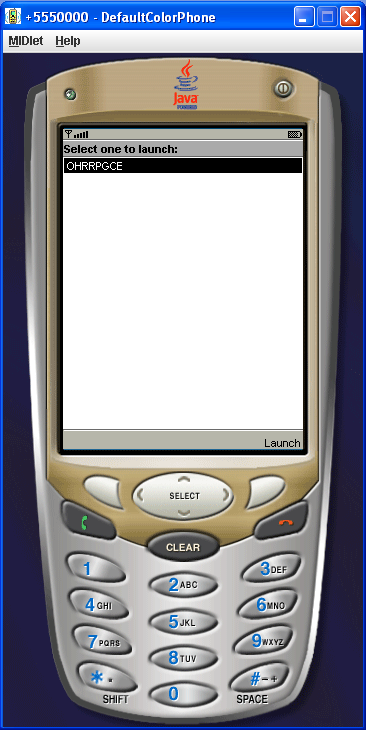
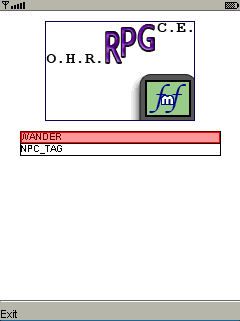

The "bin" folder contains compiled .jad and .jar files (since compiling J2ME applications from source can be confusing.) You'll need to download the Netbeans emulator if you want to run the OHRRPGCE FMF on your desktop. Unfortunately, it's a hefty process. You'll need to:
- download the Java SDK & Netbeans bundle
- download the Netbeans Mobility Pack
- Install both of your downloads, then browse to the emulator's bin directory. It should be located in USER_HOME\.netbeans\5.5\emulators\wtk22_win\emulator\wtk22\bin on Windows (USER_HOME being C:\Documents and Settings\USER_NAME or some related nonsense) and in a similarly-named directory on Linux.
- Copy the files GAME_FMF.jar and GAME_FMF.jad to that directory.
Casually speaking, a developer may have a bundled copy of all this nonsense lying around. You could email him.
Now, open a command prompt and type:
emulator.exe -Xdescriptor:GAME_FMF.jad -Xheapsize:20M
The heapsize is necessary to keep your emulator from running out of memory. At this point, the emulator should open in a seperate window, displaying your Midlet:

Hit Enter (or use the mouse to hit the phone's upper-right button) to select the OHRRPGCEFMF. At this point, the program will launch. If nothing crashes, you should see:

Use the arrow keys to selecta game, and hit "Enter" to launch it. (Alternatively, use 2,4,6,8 and 5 on the mobile keypad.) Now, you'll be asked to confirm (see below-left). Hit Enter, and a progress bar will appear (see below-right). The two games provided with the OHRRRPGCEFMF at this point are Wandering Hamster and a modification of the NPC Tags tutorial.


Eventually (a white "L" in a red circle may appear; just keep waiting) the game's starting map will be displayed. Walk around! If any NPCs are around, they will be walking at a constant rate (whoops!) and will be outlined in blue. Doors between maps are outlined in yellow. NPCs with no graphics have blue Xs through them. If you walk around the worldmap long enough, you might encounter some enemies! You'll be kindly asked to win, lose, or flee from the fight:

Hit Enter to talk to NPCs or ride/alight vehicles. Note that message boxes will force in newlines (the little arrowy-things) to prevent text from scrolling off the side of your phone, if your display is small or vertical in nature. Long message boxes scroll. Text boxes chain correctly. NPCs can be pushed. Eventually, you'll want to open the menu. Hit 1, 3, 7, or 9 -one of them should work! Call this the "Cancel" key. The menu can be navigated with the arrow keys; hit "Enter" to activate whatever the cursor's on, and his "Cancel" to leave the current sub-menu (or the menu itself.)
Try the NPC_TAG game, as it showcases tiny fixes that you might not notice otherwise; for instance, long text boxes, pushable walking NPCs, and the fix to hallmark bug "Hit & Run."